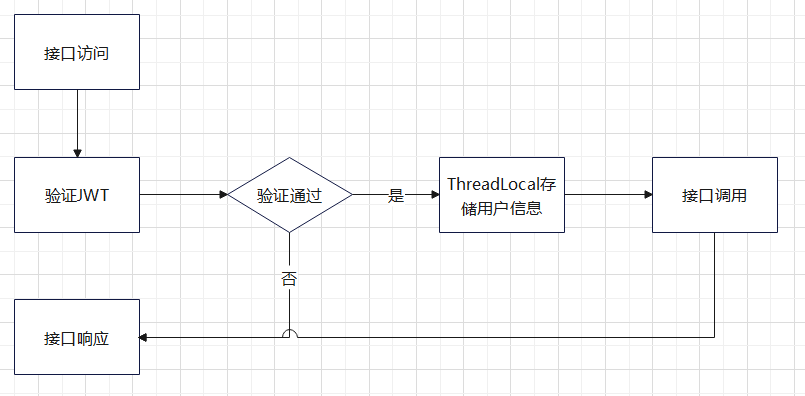
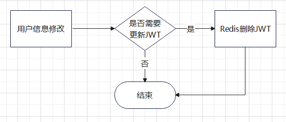

微服务接口认证
在前后端分离的实践中接口定义问题是无法回避的。关于接口的认证和访问权限设置，这里记录一些个人想法。
接口分级
首先我们将接口分为几个不同的访问等级：
- level-1 开放接口，对所有人开放无需认证
- level-2 认证接口，仅对认证用户开放，每次访问需要通过用户token进行认证
- level-3 内部接口，仅对内部开放，通过内部约定的token进行认证
根据接口等级的定义，我们可以得到接口的几种访问形式：
- 服务内部模块调用
- 跨服务调用
- 前端调用
- 第三方调用
- 公开调用
最终我们可以汇总出接口的访问矩阵
| 访问方式\接口等级 | 开放接口L1 | 认证接口L2 | 内部接口L3 |
|---|---|---|---|
| 服务内部调用 | √ | × | √ |
| 跨服务调用 | √ | × | √ |
| 前端调用 | √ | √ | × |
| 第三方调用 | √ | √ | × |
| 公开调用 | √ | × | × |
名词解释
JWT，全称Json Web Tokens，是一个开放的、符合工业标准RFC 7519的认证方法，主要用于满足交互双方的安全需求。
JSON Web Tokens are an open, industry standard RFC 7519 method for representing claims securely between two parties.
JWT由header,payload和signature三部分组成。
header包含了token类型和加密算法。
1 | { |
payload是信息的主体，可以包含任何想要传递的信息，但是从安全考虑包含的信息应该是不敏感的信息。
1 | { |
header和payload部分都通过base64UrlEncode对内容进行编码。signature是token的签名部分，主要用于确保token没有被篡改。签名算法如下：
1 | HMACSHA256( base64UrlEncode(header) + "." + base64UrlEncode(payload), secret) |
这里的 HMACSHA256 是在header部分指定的加密算法，secret是约定的密钥，是安全的保证。

系统设计
在实际应用场景中，需要使用到JWT认证的有：
- 用户认证，登录用户需要访问系统接口的情况
- 模块认证，模块之间接口访问的情况
- 服务认证，系统之间接口访问的情况
用户认证
针对用户认证场景，我们定义业务类型为1，在JWT的header中增加字段bizType来描述，即用户认证token的header为：
1 | { |
在payload中需要包含用户的相关信息，如基础的userId,userName，权限相关的角色信息，授权节点信息。以下是一个示例的payload：
1 | { |
JWT 用户认证流程如下：
获取Token

接口访问
Token失效

模块认证
模块认证的目的在于确保内部接口只有内部可以访问，所以对于所有需要访问的模块可以共同约定一个内部Token作为JWT的payload。
相对于用户认证的流程，模块认证只需要关注接口访问部分。
服务认证
服务认证目前考虑节点和主站之间互联的认证问题，和用户认证的Token相比差异主要在payload部分：
1 | {"nodeId": "12"} |
而在流程上的差异在于服务注册部分，服务的token通过数据库保存不设置失效时间，除非重新注册。
技术实现
技术实现上主要包含了Redis存储的格式，结合shiro的验证以及ThreadLocal保存用户信息的三个部分。
Redis数据格式
JWT在Redis中使用Hash存储，key为固定字符“JWT”，field为userId, field_value为生成的JWT。示例如下：
1 | JWT={1=xxxxxxx,2=yyyyyyyyyy} |
考虑认证的流程，客户端传入JWT，通过HVALS获取到所有的JWT，即可判断传入的JWT是否合法。
在重新登录或者修改用户信息的场景中，只需要将对应userId的value删除或者替换即可。
结合shiro的验证
在shiro中通过设置不同的Realm来应对不同业务场景的认证：
UserJWTRealm
1
2
3
4
5
6
7doGetAuthenticationInfo：
首先判断当前token是否过期
判断当前token是否包含在redis token列表中
返回认证结果
supports:
当前token类型是JWTToken，并且header中获取的bizType=1InnerJWTRealm
1
2
3
4
5
6
7doGetAuthenticationInfo：
首先判断当前token是否过期
判断当前token是否和预置的InnerToken一致
返回认证结果
supports:
当前token类型是JWTToken，并且header中获取的bizType=2SystemJWRealm
1
2
3
4
5
6
7doGetAuthenticationInfo：
首先判断当前token是否过期
判断当前token在MySQL中获取的node是否有效
返回认证结果
supports:
当前token类型是JWTToken，并且header中获取的bizType=3
ThreadLocal
ThreadLocal主要用于存储JWT中携带的认证信息，避免了重复解析以及可能的接口调用造成的资源浪费。
ThreadLocal主要存储线程变量，即同一个线程中可以共享的信息。以用户认证为例，完成认证后将用户信息存储到线程变量中，可以在后续的接口调用中进行信息共享。
首先在JWTService中定义全局变量：
1 | public class JWTService { |
然后在验证完成的方法中将解析出的JWTUser 对象存入threadLocal
1 | JWTService.threadLocal.set(user.mock()); |
在使用的时候就可以直接调用获取到JWTUser对象了，详见JWTService的test方法。
总结
我们针对于目前系统中使用的需求，梳理了JWT结合Shiro用于系统认证的三个场景。从流程上分为获取token，使用token和token失效三个主要节点，每个场景针对不同流程节点又有各自的需求。
对于场景和流程节点的需求排列，最终从技术上回归到了三个主要的技术点，Redis、Shiro和ThreadLocal。通过Redis合理的数据结构存储、Shiro Filter机制的分级认证和ThreadLocal的线程变量简化，共同串联起当前的认证流程。
对于JWT来说，Token的过期机制会直接影响到系统的安全性。鉴于目前服务都是在系统闭环内完成，暂时不考虑对于过期机制进行过多设计，仅考虑由于重新申请令牌的过期处理。后续如果接入了第三方系统，或者作为一个开放平台来说需要加强这方面的考虑。